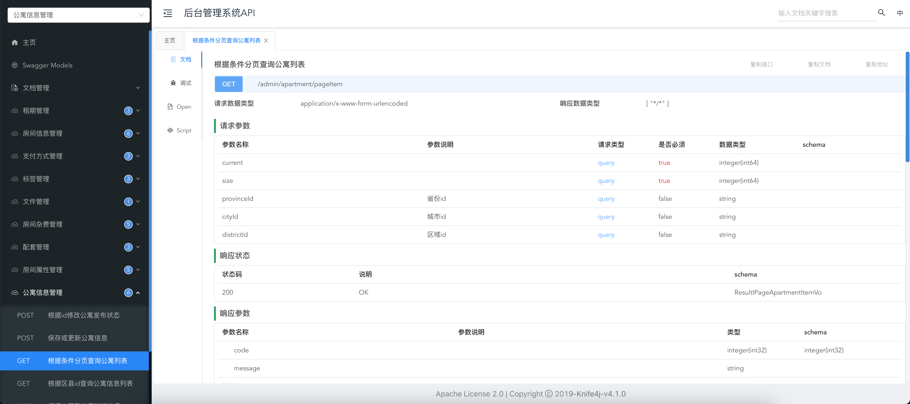

Knife4j快速入门
1 概述
Knife4j是一个用于生成和展示API文档的工具，同时它还提供了在线调试的功能，下图是其工作界面。

了解：
- Knife4j有多个版本，最新版的Knife4j基于开源项目
springdoc-openapi，这个开源项目的核心功能就是根据SpringBoot项目中的代码自动生成符合OpenAPI规范的接口信息。
- OpenAPI规范定义接口文档的内容和格式，其前身是
Swagger规范。
2 与SpringBoot集成
与SpringBoot的集成相对简单，具体操作如下
创建SpringBoot项目
引入Maven 依赖
Knife4j的依赖如下
1
2
3
4
5
| <dependency>
<groupId>com.github.xiaoymin</groupId>
<artifactId>knife4j-openapi3-jakarta-spring-boot-starter</artifactId>
<version>4.3.0</version>
</dependency>
|
项目完整的pom.xml文件如下
1
2
3
4
5
6
7
8
9
10
11
12
13
14
15
16
17
18
19
20
21
22
23
24
25
26
27
28
29
30
31
32
33
34
35
36
37
38
39
40
41
42
43
44
45
46
47
48
49
50
51
| <?xml version="1.0" encoding="UTF-8"?>
<project xmlns="http://maven.apache.org/POM/4.0.0" xmlns:xsi="http://www.w3.org/2001/XMLSchema-instance"
xsi:schemaLocation="http://maven.apache.org/POM/4.0.0 https://maven.apache.org/xsd/maven-4.0.0.xsd">
<modelVersion>4.0.0</modelVersion>
<parent>
<groupId>org.springframework.boot</groupId>
<artifactId>spring-boot-starter-parent</artifactId>
<version>3.0.9</version>
<relativePath/>
</parent>
<groupId>com.atguigu</groupId>
<artifactId>hello-knife4j</artifactId>
<version>0.0.1-SNAPSHOT</version>
<name>hello-knife4j</name>
<description>hello-knife4j</description>
<properties>
<java.version>17</java.version>
</properties>
<dependencies>
<dependency>
<groupId>org.springframework.boot</groupId>
<artifactId>spring-boot-starter-web</artifactId>
</dependency>
<dependency>
<groupId>org.projectlombok</groupId>
<artifactId>lombok</artifactId>
<optional>true</optional>
</dependency>
<dependency>
<groupId>org.springframework.boot</groupId>
<artifactId>spring-boot-starter-test</artifactId>
<scope>test</scope>
</dependency>
<dependency>
<groupId>com.github.xiaoymin</groupId>
<artifactId>knife4j-openapi3-jakarta-spring-boot-starter</artifactId>
<version>4.3.0</version>
</dependency>
</dependencies>
<build>
<plugins>
<plugin>
<groupId>org.springframework.boot</groupId>
<artifactId>spring-boot-maven-plugin</artifactId>
</plugin>
</plugins>
</build>
</project>
|
创建配置类
创建 com.atguigu.helloknife4j.config.Knife4jConfiguration ，内容如下
1
2
3
4
5
6
7
8
9
10
11
12
13
14
15
16
17
18
19
20
21
22
23
24
25
26
| @Configuration
public class Knife4jConfiguration {
@Bean
public OpenAPI openAPI() {
return new OpenAPI()
.info(new Info()
.title("hello-knife4j项目API")
.version("1.0")
.description("hello-knife4j项目的接口文档"));
}
@Bean
public GroupedOpenApi userAPI() {
return GroupedOpenApi.builder().group("用户信息管理").
pathsToMatch("/user/**").
build();
}
@Bean
public GroupedOpenApi systemAPI() {
return GroupedOpenApi.builder().group("产品信息管理").
pathsToMatch("/product/**").
build();
}
}
|
启动项目
启动SpringBoot项目，访问http://localhost:8080/doc.html，观察接口文档。
3 基本使用
Knife4j的使用也十分简单，我们只需使用几个简单注解，对接口进行描述，Knife4j就能自动生成API文档了。具体操作如下
描述实体类
创建 com.atguigu.helloknife4j.entity.User ，内容如下
1
2
3
4
5
6
7
8
9
10
11
12
13
14
15
16
| @Data
@Schema(description = "用户信息实体")
public class User {
@Schema(description = "编号")
private Long id;
@Schema(description = "用户姓名")
private String name;
@Schema(description = "用户年龄")
private Integer age;
@Schema(description = "用户邮箱")
private String email;
}
|
知识点：
@Schema 注解用于描述作为接口参数或者返回值的实体类的数据结构。
描述Controller接口
创建 com.atguigu.helloknife4j.controller.HelloController ，内容如下
1
2
3
4
5
6
7
8
9
10
11
12
13
14
15
16
17
| @RestController
@RequestMapping("/user")
@Tag(name = "用户信息管理")
public class HelloController {
@Operation(summary = "根据id获取用户信息")
@GetMapping("getById")
public User getUserById(@Parameter(description = "用户id") @RequestParam Long id) {
User user = new User();
user.setId(id);
user.setName("zhangsan");
user.setAge(11);
user.setEmail("zhangsan@email.com");
return user;
}
}
|
知识点：
@Tag 注解用于对接口进行分类，相同 Tag 的接口会放在同一个菜单。
@Operation 用于对接口进行描述。
@Parameter 用于对HTTP请求参数进行描述